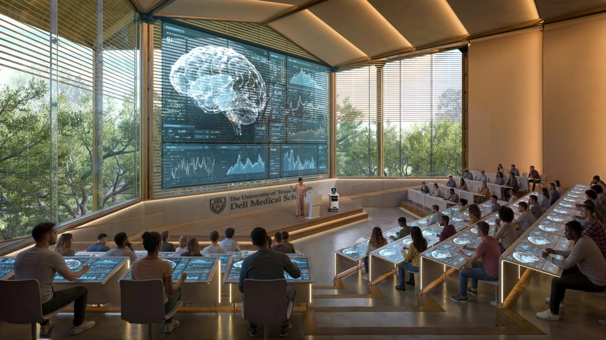
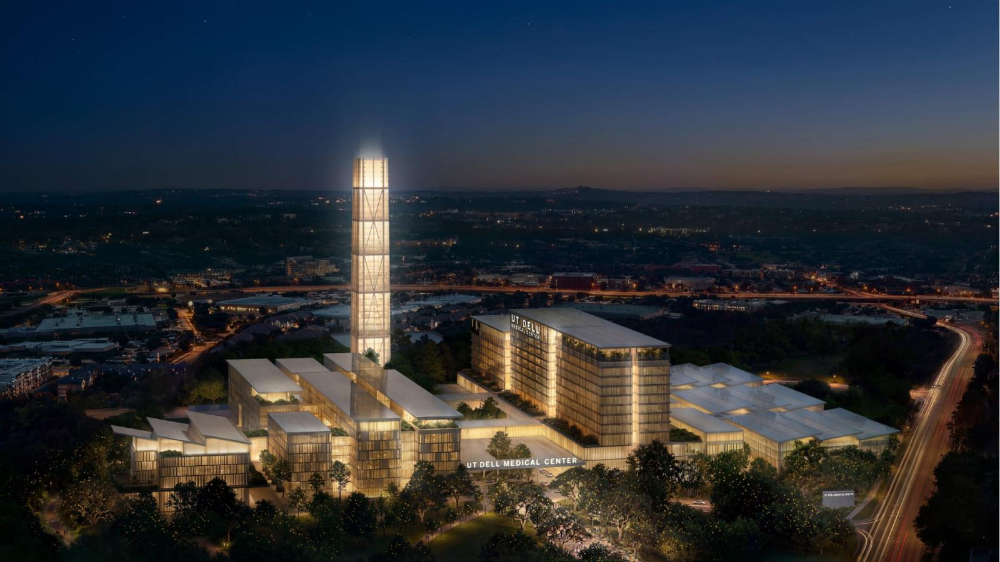
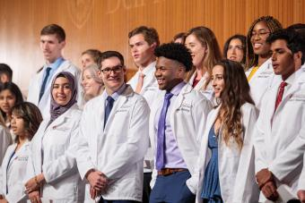
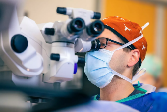

The UT Dell Medical Center, anchored by Dell Medical School, is an unprecedented opportunity that brings together state-of-the-art clinical care, cutting-edge research and next-generation medical education in the heart of Austin — which, until now, has been the largest U.S. city without an academic medical center.
Leveraging the newest commitment from the Michael & Susan Dell Foundation, a billion-dollar academic research enterprise and a historic integration of the world-renowned University of Texas MD Anderson Cancer Center, UT is building more than a hospital. We're creating a seamless, digitally enabled health system — powered by data, AI and innovation — that transforms not only how care is delivered, but how people get and stay healthy.

For too long, many Central Texans have had to travel elsewhere for complex care. That ends here. By expanding access to lifesaving treatments, attracting the brightest minds in medicine and research, and developing an integrated, person-centered care model, the UT Dell Medical Center will transform Austin into a premier destination for health.

The UT Dell Medical Center unites the strengths of Dell Medical School, UT MD Anderson and UT's top-ranked programs in engineering, nursing, pharmacy, business and more — creating a comprehensive health system that redefines what's possible in health care.

Dell Medical School, which welcomed its first class of students 10 years ago, is a driving force behind UT's emerging academic health ecosystem — advancing patient care, pioneering research, and leading innovation in medical education and life sciences entrepreneurship.

UT Medicine is a growing academic health system that brings together advanced discovery and compassionate, individualized care. Building on the foundation of UT Health Austin, UT Medicine reflects an integrated approach to care with a continued commitment to personalized, whole-person health.